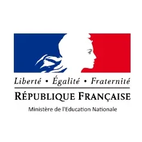

|
Research Intern, Meta VR/XR Team, Redmond, USA.
06.2025 – 11.2025 (fixed-term) |

|
Visiting Researcher, Interactive Geometry Lab, ETH Zürich, Switzerland.
10.2021 – 04.2022 (fixed-term) Under the supervision of Prof. Olga Sorkine-Hornung, we developed a novel way to produce 2D patterns from 3D garments. Our method relies on generating plausible cutting lines using a cross field, and flattening the patches into 2D panels with an algorithm tailored to woven garments. This work was published at SIGGRAPH 22. |
|
|
Research Engineer, CEA Paris-Saclay, France.
03.2021 – 09.2021 (fixed-term) At the national centre for nuclear physics research, I conducted research on automatic hexahedral meshing with preservation of CAD feature edges, supervised by Franck Ledoux. We developped an evolutionary algorithm to morph arbitrary shapes into polycubes, and presented our work at Eurographics 23. This was also part of the SALOME open-source project. |
|
3D Software Engineer Intern, Squaremind, Paris.
06.2020 – 12.2020 (fixed-term) I was the first intern in a promising early stage startup working on the future of skin cancer detection. I worked on a wide range of topics, including the generation of a photorealistic skin dataset for computer vision and developing an interface for a 7-DoF robotic arm, using C++, CMake, OpenGL, Qt and Git. As of 2025, Squaremind has grown 5x and has started clinical trials. |
|

|
PhD candidate, CVLab, EPFL.
09.2022 – Today Research on 3D reconstruction and scene understanding techniques, ranging from physically-based differentiable rendering to NeRFs and 3DGS. Advised by Prof. Pascal Fua. |
|
|
Master of Computing, NUS, Singapore.
08.2019 – 12.2020 Courses centered around Machine learning and 3D geometry. Completed with Highest Distinction. My master dissertation was on shape analysis and 3D meshing, Design of Implants for Skull Reconstructive Surgery, supervised by Pr. Leow Wee Kheng. |
|
|
Master of Engineering, Télécom Paris, Institut Polytechnique de Paris.
09.2017 – 12.2020 Specialization in Computer Graphics and Operations Research. Final year project on a 3D skeleton-based modelling software, supervised by Pr. Jean-Marc Thiery. |
|  |
Classes préparatoires, Lycée Pothier, Orléans.
09.2015 – 07.2017 French preparatory classes MPSI/MP*. Maths, physics and computer science studies preparing for the French Grandes Ecoles admission exams (CPGE). Final project on linear programming and heuristics applied to crop assignment optimization in a farm. |
|
Baccalauréat Scientifique.
2015 Highest honors, specialized in Computer Science. Final projects on fractals and an adaptation of the Game of Life. |